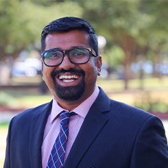

|
Dr. Aravind Mohan is an Assistant Professor in the Department of Computer Science at McMurry University in Texas. Previously, Dr. Mohan was a faculty at Allegheny College in Pennsylvania. He completed his Ph.D. in Computer Engineering at Wayne State University in 2017 in the Big Data Research Lab led by Dr. Shiyong Lu. Before that, he worked in the industry as a software engineer.
His research focuses on big data management and cloud computing. His broader areas of interest are services computing, online education services, and information retrieval. He has published several research articles in peer-reviewed international conferences, including the IEEE conference on services computing, big data congress, big data, big data computing services and applications, and the ACM SIGIR conference. He is a member of IEEE and ACM.
|